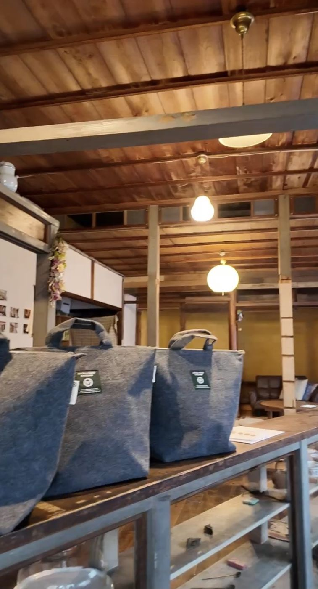

MORNING — モーニング
生わさびご飯モーニング
- 時間：
- 8:30〜10:30
- 参加費：
- 無料
すりおろしたての本わさびでいただく、わさびごはんモーニングです。限定10食のため、申込フォームからのお取り置きをおすすめしています。
朝ごはんを一緒に食べて、生ごみを土にかえる方法を知る朝
MORNING — モーニング
すりおろしたての本わさびでいただく、わさびごはんモーニングです。限定10食のため、申込フォームからのお取り置きをおすすめしています。

COMPOST — コンポスト
生ごみを堆肥に変えるコンポストの始め方を、初心者の方にも分かりやすくお伝えします。コンポストスターターセットは、モニター価格（先着10名）でご案内しています。
すりおろしたての本わさびでいただく、わさびごはんの朝ごはんです。
講師の森友美さんから、生ごみを堆肥に変えるコンポストの始め方を教わります。
モーニングとコンポスト講座は、申込フォームがそれぞれ別になっています。
お申し込みはこちら
Googleフォームが開きます。両方に参加する方は、2つとも申し込んでください。